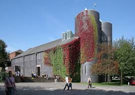

The Christian Union has been such a big part of my study abroad here at Keele and I am so grateful for this society. It is such a great community and the people are so nice. I made the greatest friends here and they made it feel more like home here. Because it is a society with weekly meetings, it was easy to meet people there and when I made friends, it was amazing to see them on a weekly basis. We could really grow together in our friendships and in our relationship with God and that is such a beautiful thing.
CHRISTIAN UNION
Main meetings every Wednesday
at 19:30 in the Chapel
